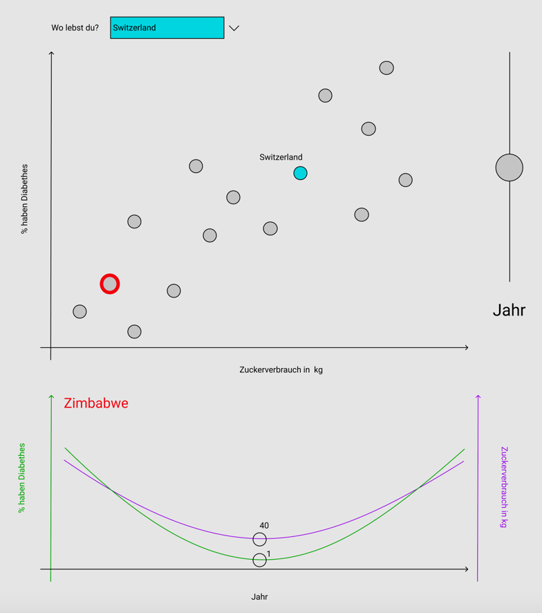

This page will guide you through information about health facts around the world. A healthy diet helps to protect against malnutrition and prolongs life expectancy. The more healthy foods people add to their diet, the lower their risk of premature death. Compare yourself with the countries you have selected. Perhaps this will convince you to eat healthy in the future.
The healthy food journey starts here...
Text about the importance of nutrition for life expectancy
Text zum BMI
Calculate your BMI...
BMI-Calculator
...and see how you rank compared to the rest of the world
Text...
Diagram showing the relationship between too much sugar und diabetes

It's not a myth!
Eating the right foods can lead to a longer, healthier life.
To increase your lifespan, check out the major food groups that help you live longer.
Breads, cereals, pasta and other grain-based foods provide carbohydrates,
which the body uses for energy. The best choices from this group are wholemeal and wholegrain breads, cereals and
savoury biscuits.
Other good choices include brown rice, couscous, wholegrain pasta and polenta.
Fruit and vegetables provide vitamins, minerals and fibre, and should be included in meals and snacks each
day.
Choose a variety of fruits, vegetables and legumes (including different colours, textures and flavours) to provide a
wide range of vitamins and minerals.
Meat, fish, milk, eggs and its alternatives (nuts, legumes, tofu etc.) are rich in protein, iron and zinc.
Milk, cheese and yoghurt are the most common dairy foods, and main dietary sources of calcium.
Having enough calcium is important for healthy bones and teeth.
Fat, oil, sugar, sweets are high in fat, sugar and/or salt.
They typically have very little nutritional value and are often processed and packaged.